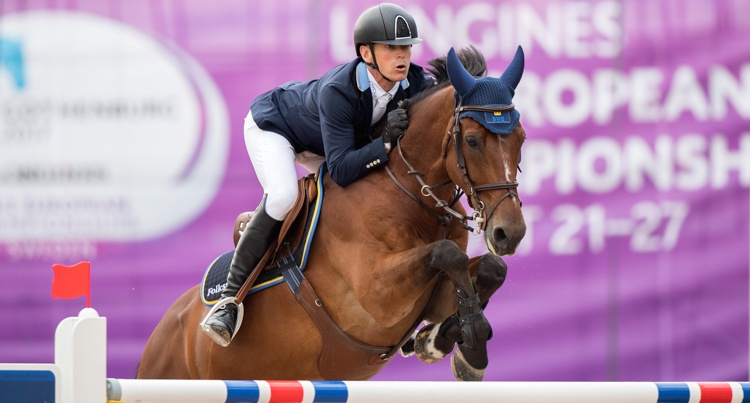
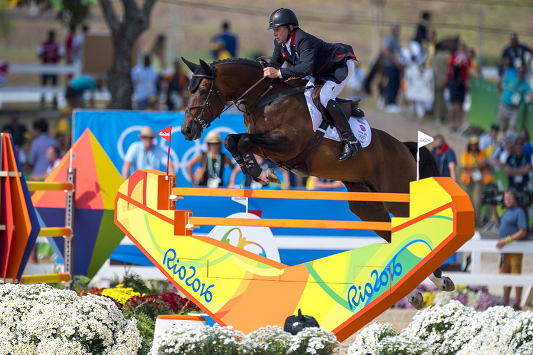

H&M ALL IN
To niemiecki ogier rasy hanoverskiej na igrzyskac w Rio wywalczył srebrny medal w konkursie indywidualnym. Jeździ na nim Peder Fredricson, dlatego pomimo swojego neimieckiego pochodzenia, ogier reprezentuje Szwecje. Jest on od urodzenia sponsorowany przez H&M stąd przedrostek przed imieniem. Na mistrzostwach w Goteborgu w 2017 w klasyfikaci drużynowej stwoim czystym przejazdem zapewnił swojej drużynie 2 miejsce. |
 |
BIG STAR
Big Star to ogier rasy KWPN. Został wychodowany w Holandii przez Klaver Cees. Urodził 1 lipca 2003, jego rodzicami są Quick Star i Jolanda. Przeszedł na emeryturę w 2016. Przez prawie całą jego karierę jeździł na nim Nick Skelton, jednak nie należy on do niego. Właścicielami konia są Baverly i Gary Widdowson oraz Oliver Robertson. To dzięki ich wierze w tego konia i ich wsparciu mógł on powrócić do sportu po długiej przerwie spowodowanej kontuzją ścięgna. W 2016 na zawodach kwalifikacyjnych do mistrzostw w Rio Nick Skeleton otrzymał ofertę 15 milionów euro, czyli 71,7 miliona złoty za Big Stara, jednk odrzucił ją, ze względu na mistrzostwa w Rio, na których zdobyli złoty medal w klasyfikacji indywidualnej. Po igrzyskach w Rio w wywiadzie Sleton został zapytany czy planuje wraz z Big Starem start podczas Igrzysk Olimpijskich w Tokio w 2020 roku. „ Nie, ten start całkowicie wykluczyłem. Big Star będzie miał wtedy 17 lat i wydaje mi się, że to będzie już za dużo. I ja też z pewnością będę już za stary!” Ale powiedział też, że Big Star jest teraz w najlepszym wieku, ma 13 lat ale mentalnie jest jak 10-latek. „Tak długo jak on pozostanie zdrowy, będziemy dalej startować”. |
 |